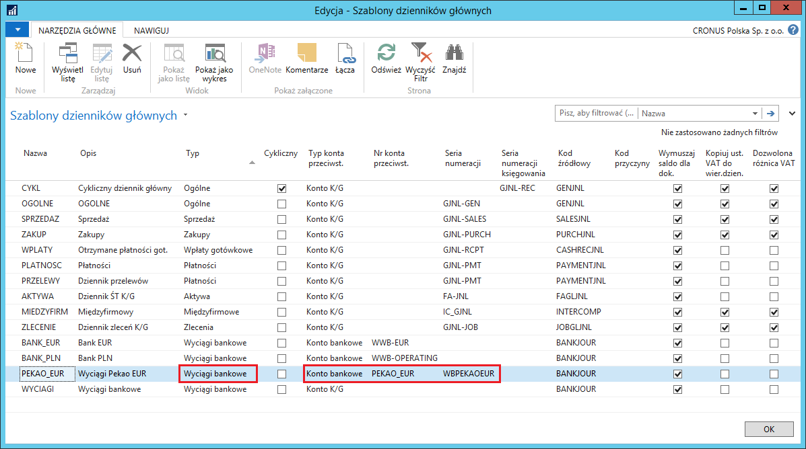
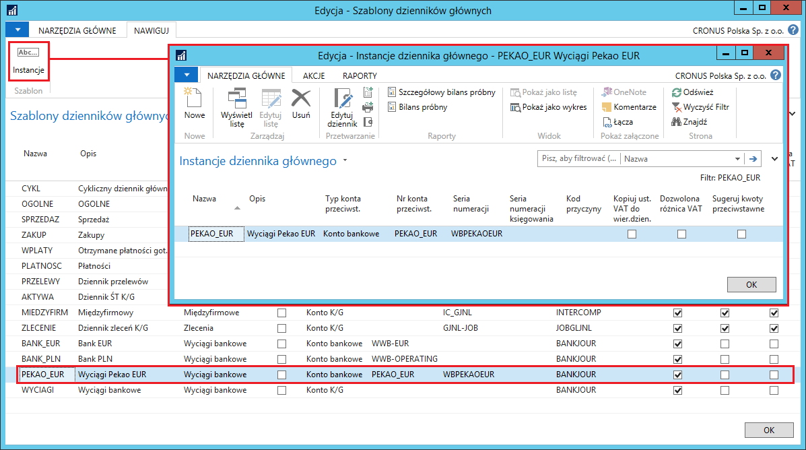
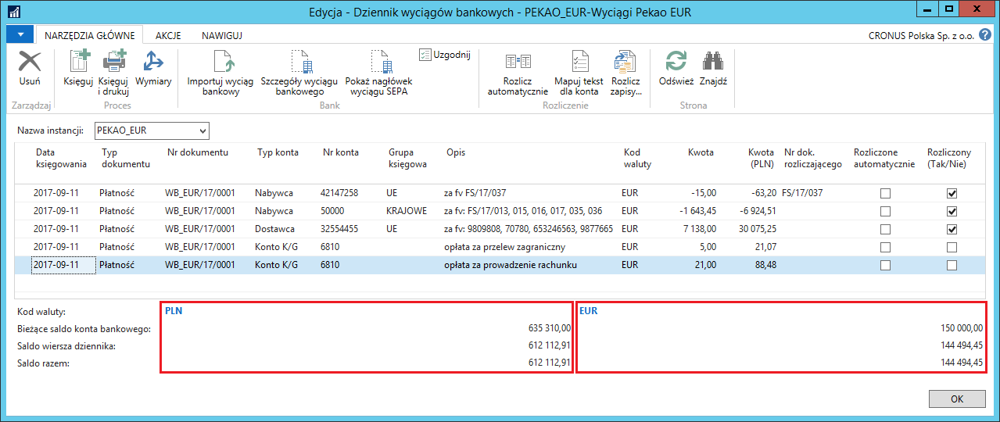

Dziennik wyciągów bankowych
Informacje ogólne
W obsłudze przepływu środków pieniężnych firmy ważna jest elastyczność i bieżąca kontrola salda. W celu zapewnienia sprawnej obsługi rejestracji operacji bankowych, Polska Lokalizacja została wyposażona w Dziennik wyciągów bankowych. Właściwe zdefiniowanie wszystkich ustawień w ramach tej funkcjonalności zapewnia najbardziej optymalną i dostosowaną do potrzeb użytkownika ewidencję transakcji na kontach bankowych.
Ustawienia
Żeby możliwe było korzystanie z funkcjonalności Dziennik wyciągów bankowych, konieczne jest zdefiniowanie szablonów i (opcjonalnie) instancji dziennika głównego dla każdego konta bankowego oddzielnie. W tym celu należy postępować według następujących kroków:
Należy wybrać Działy > Zarządzanie Finansami > Administracja > Szablony dzienników głównych
W oknie, które się otworzy, należy wybrać Nowe.
W nowym wierszu należy wprowadzić parametry szablonu dziennika przeznaczonego do księgowania wyciągów bankowych konkretnego konta bankowego. Większość pól należy uzupełnić w sposób standardowy, a charakterystyczne dla tego typu dokumentów są pola:
Typ – z listy rozwijanej należy wybrać Wpłaty gotówkowe
Typ konta przeciwst. – z listy rozwijanej należy wybrać Konto bankowe
Nr konta przeciwst. – z listy rozwijanej należy wybrać wcześniej zdefiniowane konto bankowe, z którego wyciągi bankowe będą księgowane przy użyciu tego szablonu dziennika głównego
Seria numeracji – z listy rozwijanej należy wybrać wcześniej zdefiniowaną serię numeracji, która będzie miała zastosowanie dla nadawania kolejnych numerów księgowanym wyciągom bankowym z wybranego konta bankowego
Seria numeracji księgowania – pole należy pozostawić puste.
Identyfikator strony – w tym polu należy wprowadzić numer 52063175

Definiowanie instancji dziennika głównego do szablonu typu Wyciąg bankowy odbywa się w sposób standardowy, tzn. część pól skopiowana jest z szablonu dziennika (m.in. typ i numer konta przeciwstawnego oraz serie numeracji) oraz część pól jest wypełniona domyślnie (m.in. nazwa i opis instancji). Możliwe jest ręczne dokonanie niezbędnych zmian w domyślnych instancjach i ręczne definiowanie kolejnych instancji. W tym celu należy otworzyć okno Instancje dziennika głównego poprzez wybranie Instancje dla zaznaczonego wiersza z wybranym szablonem dziennika:

Obsługa
W celu wprowadzenia i zaksięgowania wyciągu bankowego, należy postępować według następujących kroków:
Należy wybrać Działy > Zarządzanie Finansami > Zarządzanie środkami pieniężnymi > Dziennik wyciągów bankowych.
W oknie Lista szablonów dziennika gł., które się otworzy, należy wybrać jeden z wcześniej zdefiniowanych szablonów dziennika.
W oknie Dziennik wyciągów bankowych, które się otworzy, w kolejnych wierszach należy wprowadzić kolejne pozycje wyciągu bankowego, wypełniając pola odpowiednimi danymi:
Data księgowania – data, z jaką zostanie zaksięgowany wyciąg bankowy – system wstawia domyślnie datę bieżącą, którą można ręcznie zmienić na inną.
Typ dokumentu – z listy rozwijanej można wybierać spośród 2 opcji:
Płatność (od nabywcy lub dla dostawcy)
Zwrot (do nabywcy lub od dostawcy)
Pole może pozostać puste.
Nr dokumentu – pole wypełnione automatycznie przez system numerem kolejnym zgodnym z przypisaną do dziennika serią numeracji.
Typ konta – z listy rozwijanej należy wybrać typ konta przeciwstawnego wobec konta bankowego w danej transakcji bankowej
Nr konta – z listy rozwijanej należy wybrać numer konta przeciwstawnego wobec konta bankowego w danej transakcji bankowej. Konta wyświetlone na liście są zgodne z typem wybranym w polu Typ konta.
Grupa księgowa – pole uzupełnia się automatycznie domyślną grupą księgową przypisaną do wybranego w tym wierszu nabywcy lub dostawcy. W razie potrzeby, kod grupy księgowej może zostać zmieniony na inny zgodnie z regułami ustawionymi dla zastępczych grup księgowych.
Więcej o definiowaniu i obsłudze zastępczych grup księgowych można przeczytać w rozdziale Wiele kont należności/zobowiązań.
Opis – pole uzupełnia się automatycznie nazwą wybranego konta. Treść opisu należy ręcznie zmienić na odpowiednią dla wprowadzanej transakcji.
Kod waluty – pole uzupełnia się automatycznie kodem waluty przypisanym do kartoteki konta bankowego i domyślnie przypisywane jest do transakcji wprowadzanych w dzienniku wyciągów bankowych danego konta bankowego. Kodu waluty w tym polu nie można zmieniać.
Wyjątek stanowi dziennik wyciągów bankowych dla konta bankowego z domyślnym pustym kodem waluty – w wierszach takiego dziennika dozwolone jest przypisywanie wszystkich kodów walut.
Kwota – w tym polu należy wprowadzić kwotę transakcji w walucie wybranej w polu Kod waluty.
Kwota (PLN) – w tym polu system wstawi kwotę w walucie lokalnej, stanowiącą równowartość kwoty w walucie, obliczoną na podstawie właściwego kursu wymiany waluty pobranego z wcześniej uzupełnionej tabeli.
Uwaga
W sytuacji, gdy kwota wyliczona w polu Kwota (PLN) jest niewłaściwa, można ją poprawić dwoma sposobami: 1) zmienić ręcznie kwotę w polu Kwota (PLN) na właściwą, wtedy system dokona rekalkulacji kursu wymiany waluty; 2) zmienić kurs wymiany waluty w tym konkretnym wierszu dziennika wyciągów bankowych, wtedy system dokona rekalkulacji kwoty w polu Kwota (PLN).
Nr dok. rozliczającego – pole jest aktywne wtedy, gdy w polach Typ konta i Numer konta wybrany jest nabywca lub dostawca. Lista rozwijana w tym polu wyświetla nierozliczone dokumenty kontrahenta, spośród których należy wybrać jeden, który będzie rozliczony z transakcją w wierszu dziennika wyciągów bankowych.
Rozliczone automatycznie – pole wypełniane po wybraniu Rozlicz automatycznie, jeżeli w wyniku użycia tej funkcji system znalazł i zasugerował otwarty zapis księgi nabywcy/dostawcy do rozliczenia z daną pozycją wyciągu bankowego.
Rozliczony (Tak/Nie) – pole wypełniane automatycznie po połączeniu danej pozycji wyciągu bankowego z otwartym zapisem księgi nabywcy/dostawcy.
W sytuacji, gdy w jednym wierszu dziennika wyciągów bankowych rozliczanych jest więcej niż jeden dokumentów nabywcy lub dostawcy, należy wybrać Rozlicz zapisy.
W oknie Rozlicz zapisy nabywcy, które się otworzy, należy zaznaczyć wszystkie wiersze z dokumentami, które mają być rozliczone, a następnie należy wybrać Ustaw id. rozliczenia, a następnie OK.
Podczas wprowadzania wierszy w dzienniku wyciągów bankowych, jak również po zakończeniu tego procesu, możliwa jest bieżąca kontrola salda konta bankowego. Umożliwiają to pola w dzienniku wyświetlone bezpośrednio pod wierszami. Pola są zgrupowane w 2 kolumny dla konta bankowego w walucie obcej i w 1 kolumnę dla konta bankowego w walucie lokalnej:
Kod waluty – jest to kod waluty, w jakiej są wyświetlone kwoty w polach poniżej.
Bieżące saldo konta bankowego – jest to saldo konta bankowego pochodzące z zaksięgowanych dotychczas zapisów (saldo początkowe wyciągu bankowego).
Saldo wiersza dziennika – jest to kwota skalkulowana poprzez zsumowanie salda początkowego z pola Bieżące saldo konta bankowego z sumą kwot wprowadzonych w polu Kwota (lub Kwota (PLN)) do bieżącego wiersza włącznie (wiersza, w którym ustawiony jest kursor).
Saldo razem – jest to kwota skalkulowana poprzez zsumowanie salda początkowego z pola Bieżące saldo konta bankowego z sumą kwot wprowadzonych w polu Kwota (lub Kwota (PLN)) we wszystkich wierszach dziennika (przewidywane saldo końcowe wyciągu bankowego).

Tak wprowadzony i sprawdzony wyciąg bankowy można zaksięgować wybierając Księguj lub Księguj i drukuj.